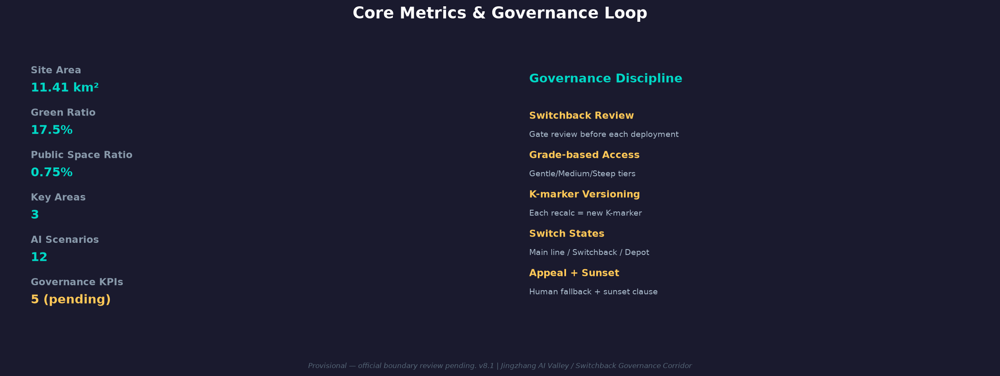

R&D→Validate→Scenario→Feedback↩Switchback Innovation Loop — a contemporary translation of Zhan Tianyou’s switchback railway
Centered on the Jingzhang Railway Heritage Park, linking three key districts—Zhongzhiyuan AI Valley, AI Origin Community, and Dazhongsi Smart Hub—forming a corridor-wide innovation network of public spaces, AI scenarios, and blue-green slow-traffic loops.
⚠ PROVISIONAL / 概念示意 / 非官方红线
🗺️
site-overview.png not found — check assets/figures/site-overview.png
Figure 1 · Site Overview & Concept (provisional, pending official boundary review)
Proposal Overview Overview
Overview Map: The proposal uses Jingzhang Railway Heritage Park as the cultural spine, organized by three-tier scopeleading from Area-wide Study (43.6 km²) to Overall Design (11.4 km²) to the three key areas (368.4 ha: Zhongzhiyuan, AI Origin Community, Dazhongsi).
Land-use distribution: AI R&D 25% / Innovation Mixed 20% / AI Services 15% / Commercial 10% / Green Space 20% / Transport 10%.
Slow traffic: Approx. 20km continuous cycling + walking path linking the three key areas; blue-green public spacethe heritage park green corridor (30-80m wide) with Xiaoyue River and Qinghe blue corridors.
Buildingsfollow the principle: retain first, retrofit second, demolish third, build new last; phasing projectsimplemented in three phases (2026-2035).
AI scenarios: 12 scenario cards (SCN-01~12), each bound to a spatial anchor NODE-01~12; tasks coveragent.1 through agent.6 6 agent tasks。
The three key districts follow a grade gradient: Dazhongsi (gentle slope/inclusive) → AI Origin Community (medium slope/industry) → Zhongzhiyuan (steep slope/cutting-edge), flanked by the Zhongguancun and Xiaoyue River wings.
Zhongzhiyuan · AI Valley
192.1 ha · Steep / Cutting-edge
Full-stack independent innovation accelerator
Spatial structure: one core, two wings
Height limit ≤60m
Scenarios SCN-01~04
AI Origin Community
104.3 ha · Medium / Industry
Industry-grade AI application community
Spatial structure: one street, one park, one community
Height limit ≤45m
Scenarios SCN-05~08
Dazhongsi · Smart Hub
72.0 ha · Gentle / Inclusive
Inclusive innovation hub
Spatial structure: one valley, one street
Height limit ≤30m
Scenarios SCN-09~12
Zhongguancun Wing
Linkage zone · Industry-academia synergy
Innovation resource channel
Connects to Zhongzhiyuan
Talent & technology bidirectional flow
Xiaoyue River Wing
Linkage zone · Blue-green ecological corridor
Ecological slow-traffic connector
Links Xiaoyue River & Qinghe blue corridors
Connects heritage park green spine
Scenario Matrix 12 Scenarios
Each scenario passes a governance gate before deployment. Hover to view the four-part safety kit: deactivation conditions, human fallback, appeal channel, sunset clause.
Governance KPI Governance KPIs
Three-signal status (red/yellow/green) mirrors railway signaling: red cannot jump to green. Five verifiable governance KPIs below; baselines pending first survey.
Metrics & Evidence Metrics & Evidence
11.41
Site Area (km²) · site_area_sqm
17.5%
Green Ratio · green_ratio
0.75%
Public Space Ratio · public_space_ratio
12
AI Scenarios
⚠ PROVISIONAL / 概念示意 / 非官方红线

📊
metrics-evidence.png not found — check assets/figures/metrics-evidence.png
All four gates passed (formal-review-ready). Status and manifest hashes below (generated by the finalize workflow).
Concept Alignment PASS
Data Consistency PASS
Governance Loop PASS
Material Compliance PASS
manifest.sha256 = <generated by finalize workflow> version = v8.1 | date = 2026-08-10 | status = formal-review-ready
Sources & Assumptions Sources & Assumptions
Sources
proposal.md (v8 final framework, 2026-08-10)
Official plot conditions (where collected, see materials index)
OSM railway alignment/stations/green corridors (ODbL attribution, where collected)
Built fact inventory (official verifiable sources, where collected)
Assumptions
Area, grade, and height values are conceptual, not precise survey
Governance KPIs are evaluation commitments; baselines pending first survey, no fabricated targets
Scenario IDs SCN-01~12 and spatial anchors NODE-01~12 are one-to-one conceptual placeholders
Investment amounts, phasing years are conceptual; must be verified against official approvals
⚠ Provisional Disclaimer: All boundaries, data, and graphics on this page are conceptual (provisional), not final approved outcomes, and subject to official released documents.
图层对比探索器
图层对比探索器
Layer Explorer · 京张AI创新带 · 拔线等价基准 (SWB)
几何图层 (1-9)
治理叠加
视图
缓坡·社区中坡·行业陡坡·攻关折返点
键盘：数字 1–9 切换图层 · G 治理节点 · P 拔线测试（AI 关闭等价操作）· 方向键平移 · +/- 缩放
拔线测试开启时，AI 节点变暗、显示无 AI 基线路径（SWB 等价可用）——验证场景在 AI 关闭后仍可运行。